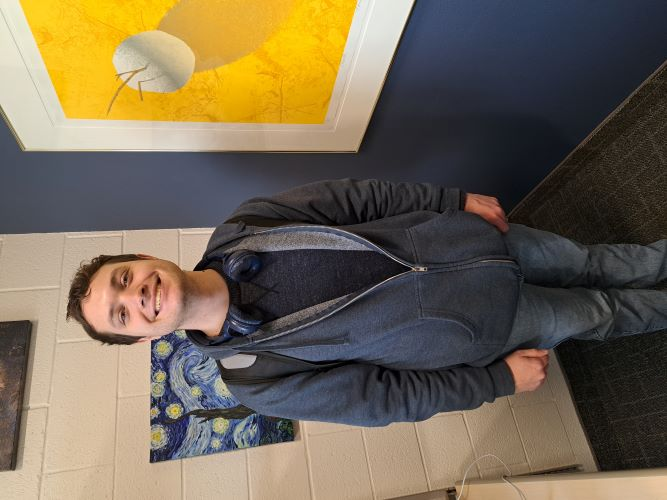

Hayden Olson
I am doing Software Engineering for my major. I want to create my own video game some day. For now I want to explore different aspects of programming.
I like playing video games. Ones with great stories really captivate me, like the "Ace Attorney" games and RPG's like "Bug Fables" and "OMORI". "Paper Mario the Thousand Year Door" is the game that inspired me to make my own story for a game.
I have always wanted to make my own website. Creating one from scratch seems like a lot of fun with the vast customizations one can make for their website.
It would be especially awesome to make a webpage for the game I wish to make, having a character page, enemy listings, fun facts, side stories, and so on to show off. I have various Google Docs for this stuff, but I would rather have everything in a connected environment together.
I have been in the church my whole life. I served a service mission in my hometown, Las Vegas, during covid in 2019. It was the perfect mission for me because I am more of a helper than a teacher.